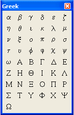
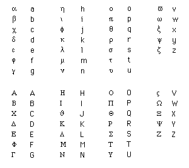

Greek Toolbar |
Greek characters can be used just like Roman characters for variable and function names, and, in some cases, are used for Mathcad built-in functions and variables. Click on the button in the Math toolbar to bring up the Greek toolbar, or choose View > Toolbars > Greek from the menus:
|
 |
To convert any Roman character into its Greek equivalent, type [Ctrl] G immediately after typing the character. |
You can insert Greek characters from the Greek toolbar. To see the name of the Greek letter, hover the cursor over a button until a tooltip appears. A description appears on the message line of the Status Bar.
